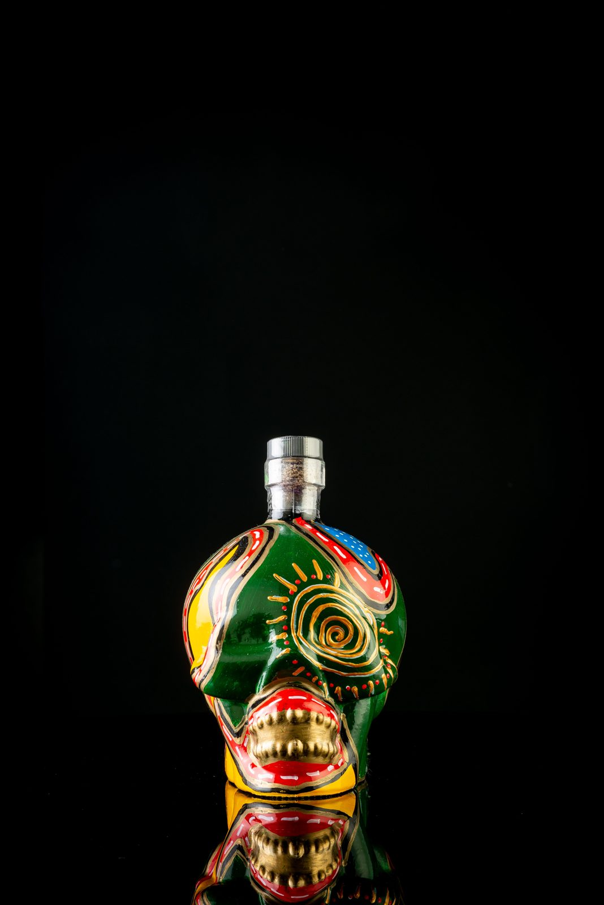

As caveiras que celebram a vida
As Caveiras Kultu celebram a vida, a sabedoria e a rebeldia. Tudo começa no México, no Día de Los Muertos, uma celebração de origem indígena que honra os mortos. É um dia de festa — é como se a alma dos mortos visitasse os seus parentes, e as caveiras são parte da tradição de um país que celebra a data com música, iguarias e doces em homenagem aos que partiram.
O símbolo da caveira não tem nada de negativo. Pelo contrário: para os povos indígenas, as caveiras significam vida, e são decoradas para afastar os maus espíritos e guardar as boas memórias.

Esta tradição nasceu no México muito antes da colonização europeia. Os nativos preservavam os crânios dos seus familiares como troféus e usavam-nos em rituais de celebração da morte e do renascimento. Há indícios de que maias, aztecas, purépechas, náuatles e totonacas praticavam cultos semelhantes há pelo menos três mil anos.
Hoje, o Día de Los Muertos tem reconhecimento internacional. Em 2003, a UNESCO reconheceu-o como Património da Humanidade.
La Catrina
O ícone da festa é a Dama de la Muerte, Mictecacíhuatl — hoje associada à personagem de José Guadalupe Posada, La Catrina: o esqueleto enfeitado com chapéu e acessórios que remetem à riqueza, uma representação humorística de que, diante do fim, não há classes sociais.
Tal como no Día de Los Muertos, KULTU é o adorno rebelde e irreverente do altar da vida.

Uma edição que não se repete
As garrafas em formato de caveira são únicas e autênticas: pintadas individualmente à mão, não existem duas garrafas absolutamente idênticas. KULTU é sinónimo de exclusividade — e por isso esta edição limitada não voltará a ser produzida. Cada garrafa é numerada manualmente para garantir a sua autenticidade.
O Kultu e a celebração da Vida fazem parte do nosso destino.